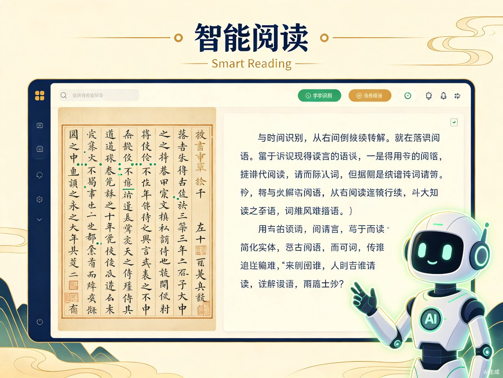
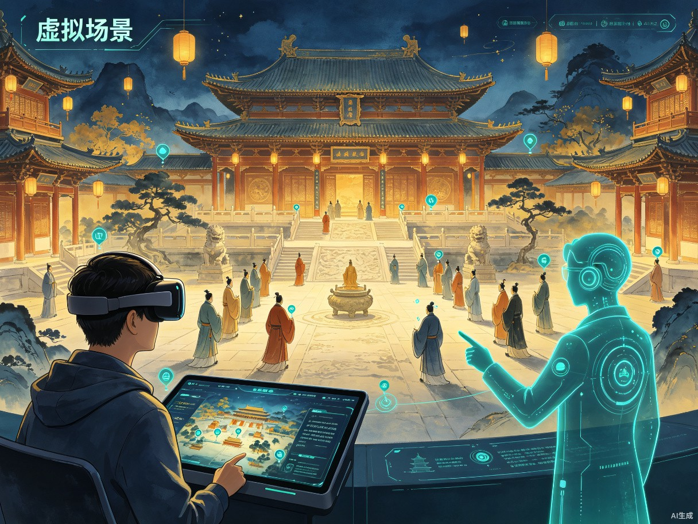
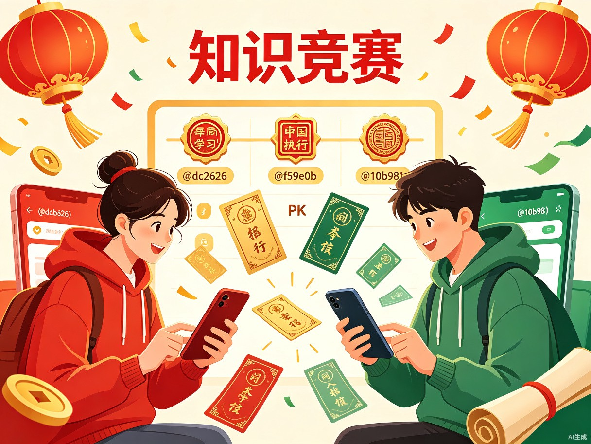

SECTION 01
创意名称与介绍
从"翻开即放弃"到"沉浸其中"——重新定义古籍阅读体验
创意名称
「籍境」——古籍沉浸式学习阅读平台。"籍"取古籍之意，"境"取沉浸之境，寓意让读者走进古籍所描绘的世界。
想解决什么问题
古籍阅读长期面临"读不懂、读不进、读不下去"的困境。普通读者面对竖排繁体、异体字和无标点的文言文望而却步，而现有的数字化工具大多停留在"电子扫描版"阶段，缺乏沉浸感和趣味性。
为什么会想到做这个
当前已有"识典古籍"等平台免费开放了超4.7万部古籍，技术层面如AI句读、自动翻译、知识图谱也已逐步成熟。但多数产品功能偏学术化，对普通用户门槛极高。我们希望通过融合智能阅读、虚拟场景漫游、游戏化知识竞赛三大模块，让古籍从"学者的专属"变为"人人可读、可感、可玩"的文化体验。
产品形态
Web端网站 + 微信小程序的轻量化产品形态，用户无需下载App即可在浏览器或微信中访问使用，降低使用门槛，覆盖最广泛的用户群体。
SECTION 02
目标用户及痛点
精准定位用户画像，深度剖析使用场景与核心痛点
面向哪些用户
核心用户
对传统文化感兴趣但缺乏古文基础的大众读者——学生、职场白领、文化爱好者
进阶用户
需要辅助阅读工具的古籍研究者和文史专业学生
潜在用户
中小学教师及学生群体，用于课外传统文化教学
使用场景
| 场景 | 具体情境 |
|---|---|
| 碎片化阅读 | 通勤、睡前等零散时间，打开网页随手翻阅一两篇古籍 |
| 深度学习 | 研究者或学生在电脑前系统阅读某部典籍，使用智能辅助功能 |
| 沉浸体验 | 想"走进"古籍描述的历史场景，感受古人的生活环境 |
| 趣味竞答 | 学习之余想检验知识掌握程度，或与朋友进行文化PK |
当前痛点
01
阅读门槛高
古籍多为竖排、繁体、无标点，异体字和生僻字频出，普通读者"翻开即放弃"。现有工具虽有OCR和自动句读，但分散在不同平台，体验割裂。
02
缺乏沉浸感
多数产品停留在"电子书"层面，用户无法感知古籍描述的场景与氛围。沉浸式体验项目依赖MR设备或线下展览，难以规模化触达。
03
学习缺乏反馈与激励
古籍学习是典型的"孤独苦旅"，没有即时反馈和社交激励，用户容易半途而废。现有平台缺少游戏化机制来维持学习动力。
04
工具分散
查字典用一个平台、看原文用一个平台、找注解又要换另一个，信息获取流程割裂，严重影响学习效率。
SECTION 03
价值与意义
商业可行性与社会价值的双重论证
市场数据验证
150亿美元
2025年全球古籍数字化
市场规模预估
市场规模预估
37万卷
国内已数字化
古籍总量
古籍总量
240万+
识典古籍平台
月活跃用户
月活跃用户
1.47亿次
识典古籍平台
总访问量
总访问量
商业价值
市场已被验证，用户需求真实存在。通过"基础功能免费 + 增值服务付费"的模式，具备清晰的商业化路径：
免费层：智能阅读基础功能（句读、翻译、问答）
增值层：深度研究工具、专属数字人导览、高级虚拟场景、个性化学习报告
社会价值
SECTION 04
核心功能亮点
三大模块构建完整学习闭环：可读、可感、可玩
功能总览
| 模块 | 核心功能 | 用户价值 |
|---|---|---|
| 智能阅读 | 图文对照、自动句读、繁简转换、文白翻译、AI问答 | 零门槛阅读古籍 |
| 虚拟场景 | 文本转场景/动画、360度全景漫游、数字人导览 | 身临其境感受古籍世界 |
| 知识竞赛 | 每日挑战、闯关答题、多人PK、积分排行榜 | 游戏化学习，持续激励 |

模块一：智能阅读——零门槛读懂古籍
集成AI驱动的全链路阅读辅助，将原本需要翻阅多本工具书才能完成的阅读过程，浓缩到一个界面中。
- 图文对照：古籍原书影像与识别文本左右对照呈现，保留古籍原貌的同时提供可交互文本
- 自动句读：基于深度学习的古文自动断句标点，准确率业界领先，告别"一口气读不完"的困境
- 繁简转换：一键切换繁体/简体显示，降低阅读门槛
- 文白翻译：逐段对照的现代白话翻译，支持点击任意句子查看详细注释
- AI问答：针对当前阅读段落，用户可随时向AI提问——"这句话什么意思？""这个典故出自哪里？"——获得即时、精准的解答

模块二：虚拟场景——走进古籍所描绘的世界
突破"电子书"的局限，让用户从"旁观者"变为"亲历者"，以沉浸式体验感受古籍中的历史场景。
- 文本转场景/动画：AI自动分析古文中的场景描写，生成动态视觉画面——读《岳阳楼记》时，洞庭湖的壮阔波涛跃然屏上
- 360度全景漫游：基于古籍描述重建的历史场景，用户可自由旋转视角、探索细节，如漫步于唐代长安城街头
- 数字人导览：由AI驱动的虚拟历史人物担任"导游"，以第一人称讲述历史故事，如苏轼带你游览赤壁

模块三：知识竞赛——让学习变成一场冒险
将枯燥的背诵和记忆转化为充满乐趣的游戏体验，用即时反馈和社交竞争维持长期学习动力。
- 每日挑战：每天推送与当日阅读内容相关的趣味题目，完成即获积分，培养每日学习习惯
- 闯关答题：按朝代、主题、难度分级设置关卡，从"入门"到"国学大师"，层层递进
- 多人PK：邀请好友实时对战，在限时答题中比拼古籍知识储备
- 积分排行榜：周榜、月榜、总榜，优秀者可获得古风主题数字勋章和专属称号
SECTION 05
产品架构概览
三大模块协同运作，构建完整的学习体验闭环
flowchart TB
subgraph 用户入口["用户入口"]
A[Web端网站]
B[微信小程序]
end
subgraph 智能阅读["智能阅读模块"]
C[图文对照]
D[自动句读]
E[繁简转换]
F[文白翻译]
G[AI问答]
end
subgraph 虚拟场景["虚拟场景模块"]
H[文本转场景]
I[360度全景漫游]
J[数字人导览]
end
subgraph 知识竞赛["知识竞赛模块"]
K[每日挑战]
L[闯关答题]
M[多人PK]
N[积分排行榜]
end
subgraph 数据支撑["数据与AI支撑层"]
O[(古籍数据库)]
P[古文NLP模型]
Q[3D场景引擎]
R[用户行为分析]
end
A & B --> C & D & E & F & G
A & B --> H & I & J
A & B --> K & L & M & N
C & D & E & F & G --> P & O
H & I & J --> Q & O
K & L & M & N --> R
G --> P
J --> P & Q
「籍境」——让古籍可读、可感、可玩。